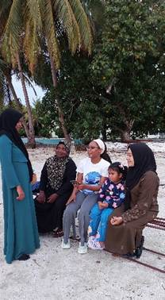
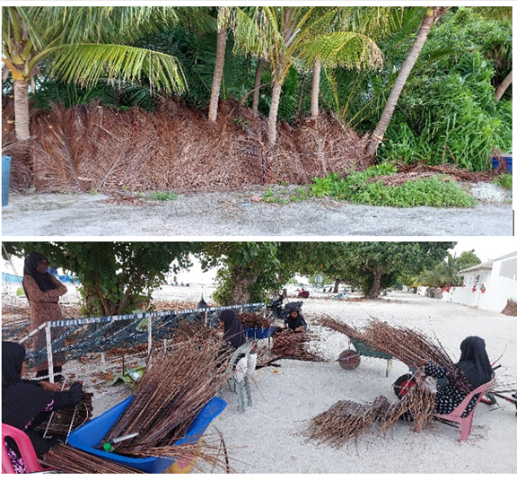
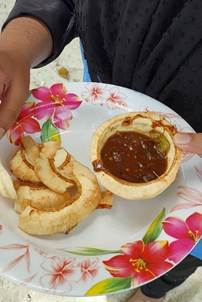
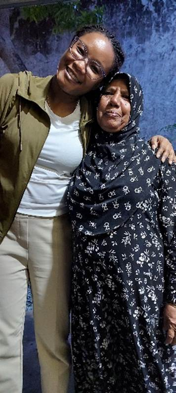

Voices Across the Tide
By Gillian Babb
When I arrived in Mulah and Kolhufushi, I was welcomed into communities shaped by water, roots, and the rhythm of daily life.
On the island of Mulah, I met women who know a lot about Kan’doo faa (mangroves). In the Maldives, all women older than 30 are called “Dhattha”. The equivalent in Suriname is “Tante”, which signifies a form of respect for women in both cultures. I gained a lot of insight from three Dhatthas whose knowledge of the mangroves is both practical and deeply woven into the culture, and each revealing a different facet of the mangrove’s place in island life.

Surveying Dhatthas in Kolhufushi
Faaiza, the first Dhattha, demonstrated how to navigate the dense tangle of roots and mud of the inland mangrove area. Hawwa, the second Dhattha, spoke of visiting the mangroves mostly when family came from other islands or the capital. She taught me about kashikeyo, the screw pine fruit that also grows in mangrove areas. Her stories painted the area as a treasured retreat, a space for connection and memory. Aisthu, the third Dhattha, spent more frequent hours in the mangroves, gathering coconut palm leaves for weaving thatch roofs and collecting screw pine fruits. Through her hands-on work, the mangroves became a source of both livelihood and cultural continuity. Through their stories and demonstrations, I could sense how deeply they valued the mangroves and believed in preserving and making them accessible for everyone.
Maldivian coconut snack
Across the atoll in Kolhufushi, the story is different. Mangroves are farther from where the people live, and many people have never walked among the roots. There, I experienced Maldivian Raivaru (short, rhythmic poems) and traditional singing while conducting surveys at evening gathering spots. Dhatthas recited Raivaru about daily life, nature, and love. Since my survey focused on mangroves and seagrass, the dhatthas recited one that praised lagoons, reefs, and seagrass beds. Another poem spoke of mangroves and jinni (supernatural beings) on an uninhabited island. These songs and poems revealed the importance the community places on these ecosystems as part of their cultural heritage.

Gathered coconut palm leaves for weaving thatch roofs
In these communities, the Dhatthas I met are more than elders. They are keepers of ecological wisdom, stories, and practices passed down through generations.
Coming from Suriname, where tropical plants and trees are abundant and many edible fruits are found, I was struck by how much of the coconut tree is used here. From eating the roots of a sprouted coconut to roofing with woven palm leaves and building boats with the timber, it was a cultural shock, but also a good lesson in resourcefulness. This makes sense as coconut trees grow almost everywhere on the islands, including near or at the edges of mangrove areas.
By the end of my fieldwork, I realized that although the mangroves and seagrass are not well-known as economic assets on these islands, they are living symbols of memories, skills, and cultural identity preserved in Raivaru and the daily lives of these Dhatthas, their family, and friends.

Family of Dhattha Hawwa enjoying the Mangrove area

Gillian and Dhattha Aisthu